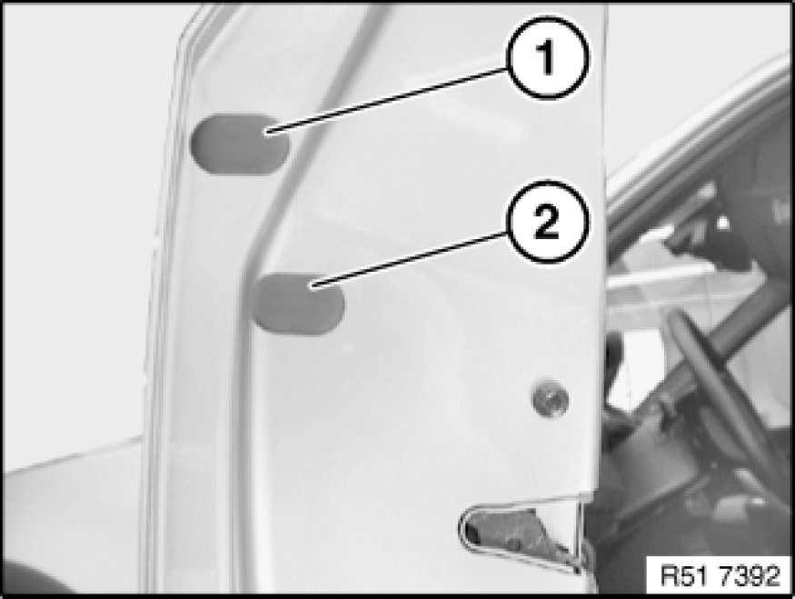
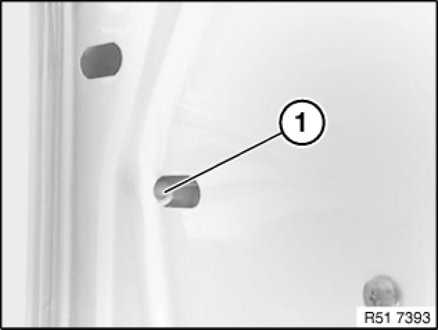
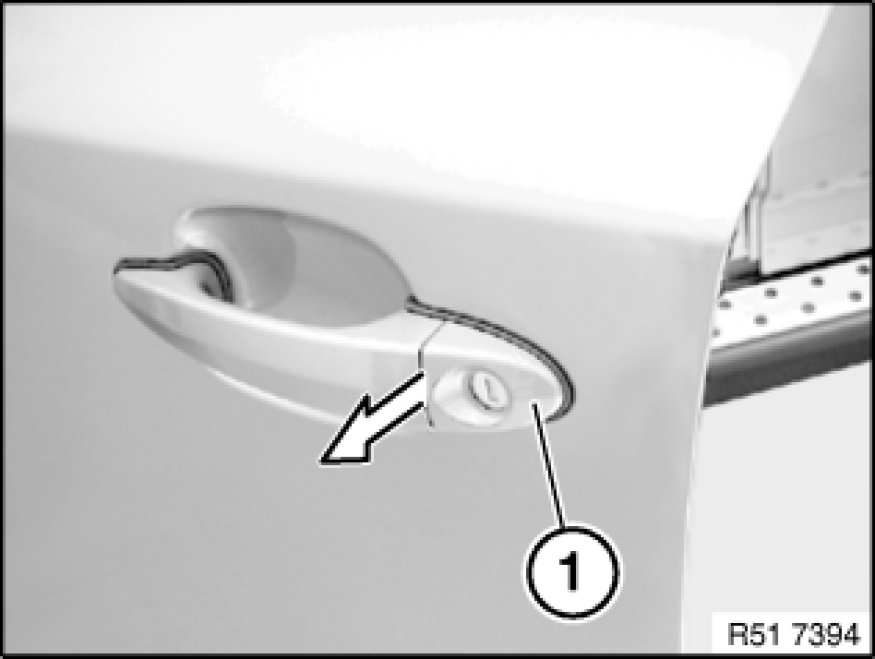
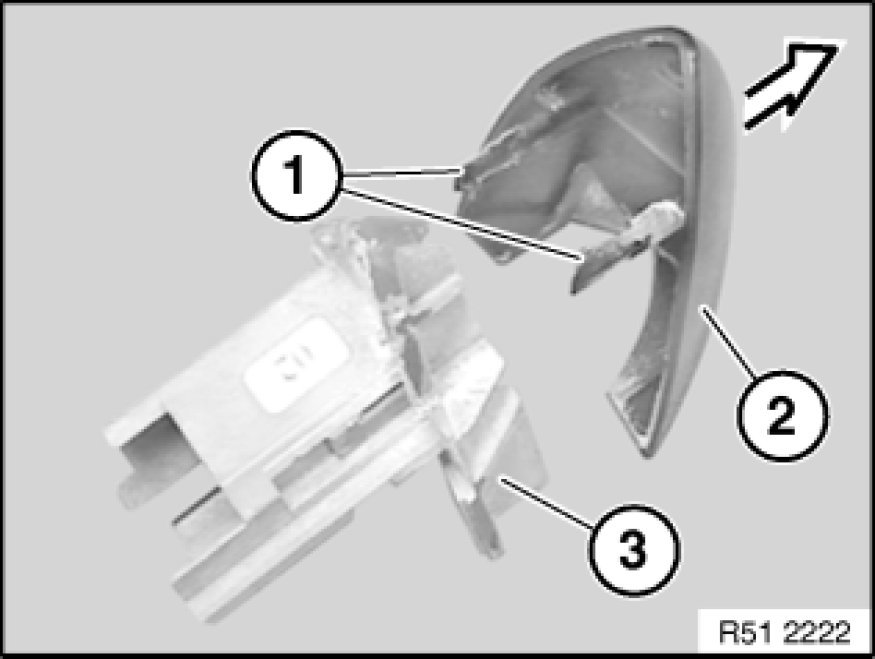

Removing and Installing/Replacing Cover on Outside Handle
51 21 180 - Removing and installing/replacing cover on outside handle

Remove trim (1).
Installation:
If necessary, replace faulty trim (1).

Release screw (1).

Pull off cover (1) in direction of arrow.

Lever out catches (1) and detach cover (2) from filler element (3).
Installation:
Catches (1) of cover (2) must not be damaged.